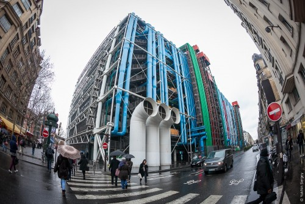

Современная архитектура
Современная архитектура, также называемая архитектурой модерна, была архитектурным движением и стилем, которые были заметны в 20 веке, между более ранними ар-деко и более поздними постмодернистскими течениями. Современная архитектура была основана на новых и новаторских строительных технологиях (в частности, на использовании стекла, стали и бетона); принцип функционализма (то есть, что форма должна следовать функции); принятие минимализма; и отказ от орнамента
Согласно Ле Корбюзье, корни движения следовало искать в работах Эжена Виоле ле Дюка.[2] Движение возникло в первой половине 20 века и стало доминирующим после Второй мировой войны до 1980-х годов, когда оно постепенно было заменено в качестве основного стиля для институциональных и корпоративных зданий на архитектуру постмодерна.

Итак, в долгосрочной перспективе при наличии довольно большой суммы денежных средств инвестирование в криптовалюту совершенно точно выгодным предприятием, но, даже имея совсем скромную сумму свободных денег в размере 10 – 25 тысяч рублей, можно грамотно вложит и заработать дополнительные средства. Важно оценить риски и выбрать правильную криптовалюту.
Современная архитектура возникла в конце 19 века в результате революций в технологиях, инженерии и строительных материалах, а также из желания отойти от исторических архитектурных стилей и изобрести что-то чисто функциональное и новое.